From Ground Station to Flying 5G Relay
Instead of carrying an entire heavy 5G base station on a drone, we separate the lightweight radio parts from the heavy computing intelligence on the ground.
The core network brain stays safe on the ground, while the drone serves as a lightweight flying relay.
Restoring 5G in Emergencies
Temporary coverage is vital after floods, forest fires, or critical outages where ground infrastructure is destroyed.
A drone can restore emergency coverage within minutes. The engineering challenge is keeping the airborne equipment light and power-efficient without losing full 5G capabilities.
Understanding the CU/DU Split
A standard 5G base station is separated into distinct functional layers:
- Core Network & CU: The ground-based "brain" managing user sessions, security, and protocols.
- DU & Radio antenna: The drone-carried "relay" transmitting actual high-speed radio waves.
- Backhaul Link (F1): The wireless link connecting the brain to the radio.
Our Physical Testbed
We built and validated a real-world benchtop setup using accessible hardware:
- serber-firecell: Server running the 5G Core & CU.
- serber-minipc: Remote DU unit.
- Raspberry Pi 5: Highly portable DU candidate.
- USRP B210: Software-programmable 5G antenna.
- Quectel Modem: Dedicated wireless backhaul link.

Chronological Progress
The system progressed systematically from software simulations to real-world wireless hardware loops.
Key achievements include connecting a commercial phone, broadcasting emergency warnings (PWS), and implementing 5G WireGuard backhauling.
Engineering Pivots
Faced with real-world hardware limits, the project shifted direction to find viable solutions:
We resolved protocol blocks, hardware overloading, and signal saturation to reach a stable prototype.
Resolution: A custom kernel plus CPU, IRQ, and USB tuning made it viable.
Pivot: Switched roles: USRP B210 serves the phone, while a Quectel 5G modem handles wireless backhaul.
Resolution: MTU/MSS and BLER-threshold tuning removed the apparent ceiling.
What Works Today
The split 5G architecture works end to end.
Next: controlled benchmarks and flight integration.
Target Airborne Architecture
The ground node hosts the heavy network functions while the payload carries the radio edge:
- Ground node: 5G Core, Central Unit, and donor base station.
- Airborne payload: Embedded DU, access SDR, and Quectel backhaul modem.
- Data flow: WireGuard transports F1-C and F1-U over the donor 5G link.

Tuning Removed the Early 23 Mbps Ceiling
Later tests overturned the early split ceiling. Tuned Ethernet reached 100 Mbps, Wi-Fi/GRE reached 52 Mbps, and Quectel/WireGuard reached 78 Mbps, versus a 190 Mbps monolithic peak.
MTU/MSS behavior and BLER scheduler thresholds—not the split alone—were the main recoverable constraints. These are best observations, not averages.

What is Next
The separated 5G network and wireless F1 paths now work.
The next phase turns best-observed demonstrations into a repeatable, flight-safe research artifact.